Префектура Исикава · Канадзава · отель
Hyatt House Kanazawa: отель с кухней в номере, чтобы пожить в Канадзаве как дома
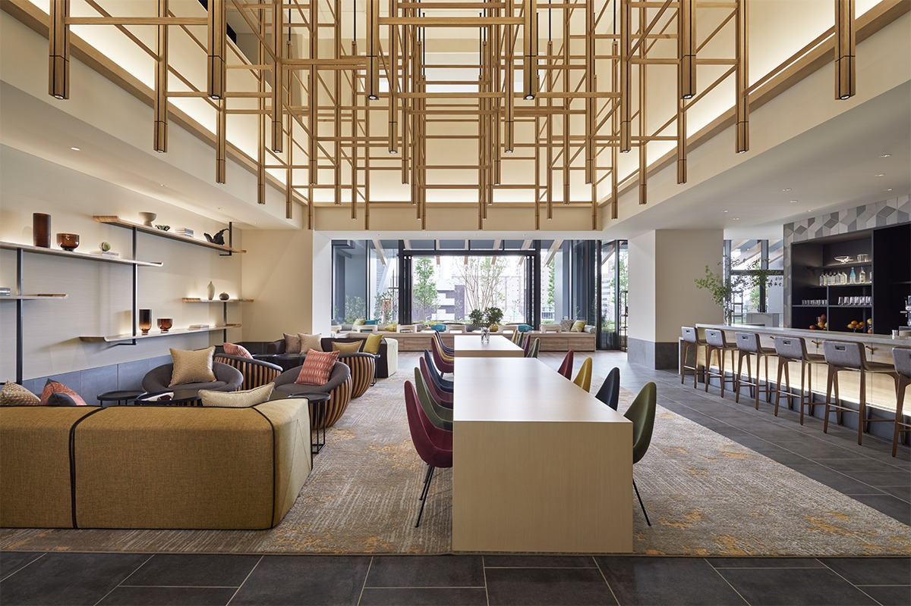
Hyatt House Kanazawa открылся в августе 2020 года и задуман для тех, кто приезжает надолго. В большинстве номеров есть кухня, так что продукты с местного рынка можно приготовить самому.
Идея
Жить, а не просто ночевать
Hyatt House Kanazawa рассчитан на тех, кто приезжает в Канадзаву надолго: на командировки в несколько ночей, на долгий отпуск, на недели, когда работа и отдых идут вперемешку. Здесь стараются, чтобы гость жил так, как жил бы у себя дома.
В отеле 92 номера, из них 20 люксов. Во многих есть холодильник, индукционная плита и всё, что нужно для готовки, поэтому можно сходить на ближний рынок, купить местных продуктов и приготовить ужин по своему вкусу. Своя кухня делает пребывание более уединённым, что особенно кстати в пандемию.
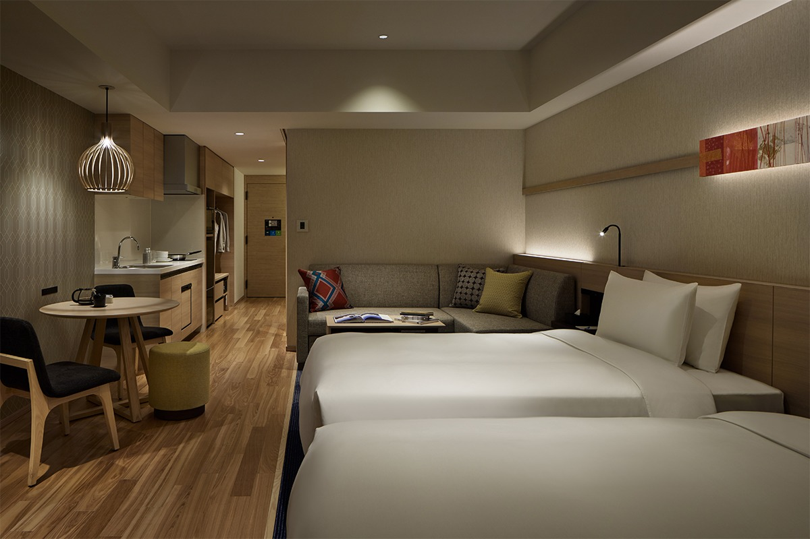
Номера
Четыре типа на выбор
Угловой люкс с кухней и двумя кроватями
Это угловой люкс площадью около 53 м²: две кровати, полностью оборудованная кухня, гостиная и столовая с рабочим местом. С диваном-кроватью здесь могут жить до трёх взрослых и трёх детей. В 2021 году номер стоил от 51 425 иен за ночь с налогом и сервисным сбором, без налога на проживание.
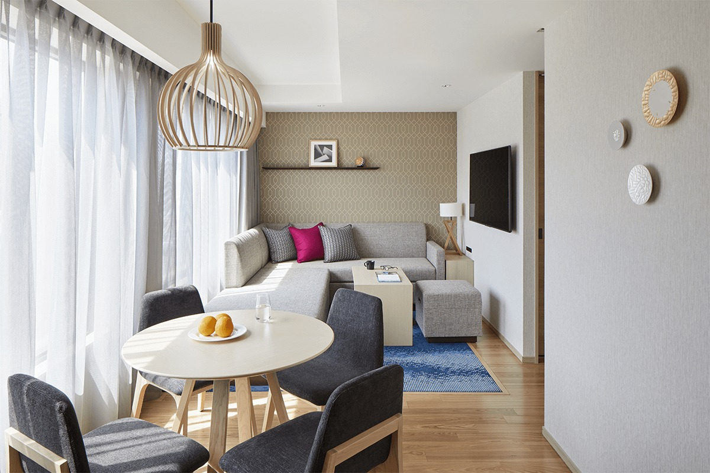
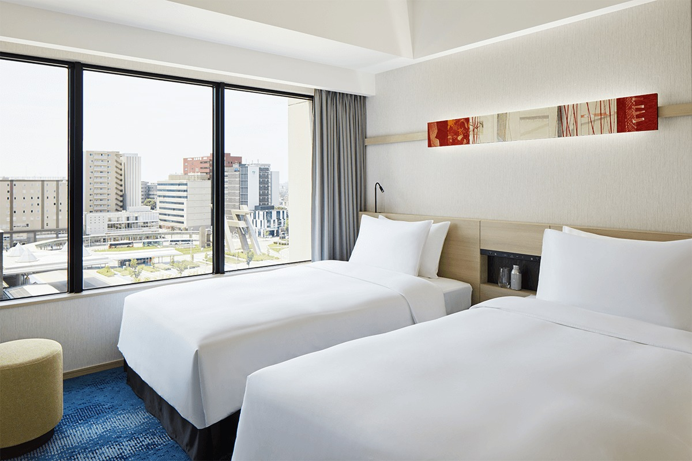
Люкс с кухней и двумя кроватями
Это люкс площадью около 54 м²: две кровати, кухня, гостиная и столовая с рабочим местом. Только в номерах этого типа стоит стирально-сушильная машина, поэтому он лучше всего подходит для поездки на несколько недель. С диваном-кроватью здесь размещаются до четырёх взрослых и двух детей. Цена в 2021 году: от 57 475 иен за ночь с налогом и сервисным сбором, без налога на проживание.
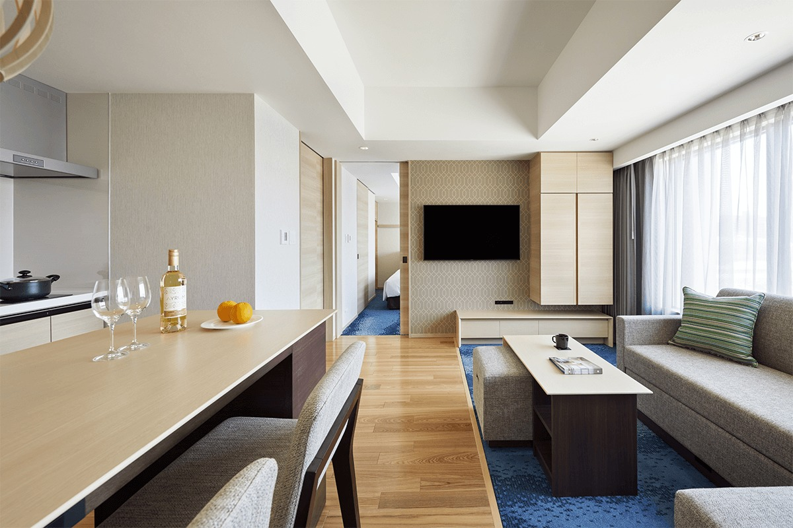
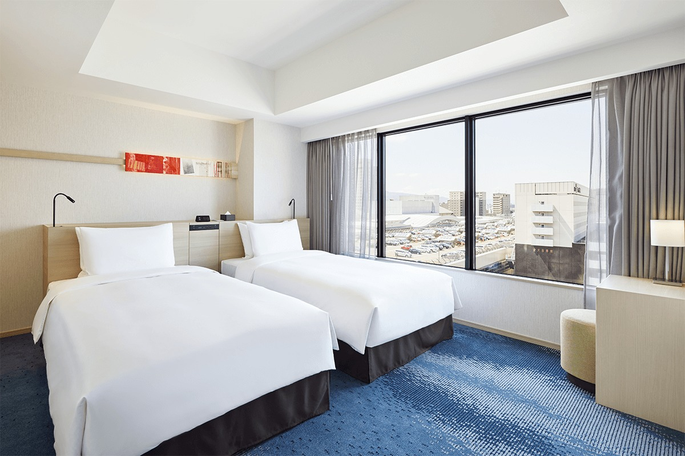
Студия с кухней
Это просторная студия около 41 м²: две кровати и кухня, чтобы жить как дома. С диваном-кроватью в ней помещаются до четырёх человек. В 2021 году номер стоил от 21 175 иен за ночь с налогом и сервисным сбором, без налога на проживание.
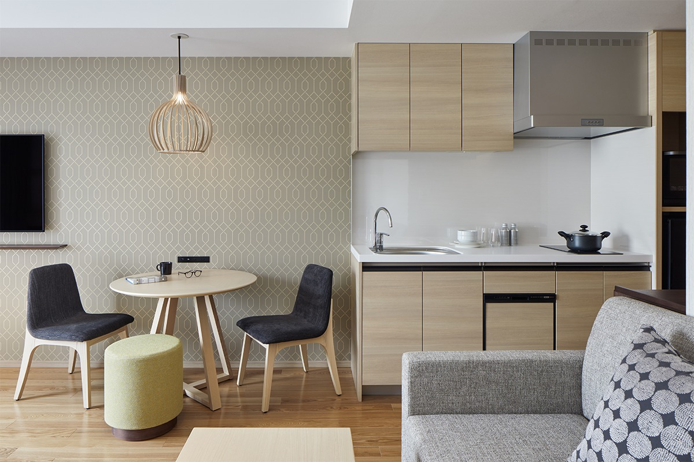
Кабинет с большой кроватью
Это номер площадью 28 м² с большой двуспальной кроватью. Кухни здесь нет: он скорее для тех, кто приехал по делам и хочет сосредоточиться на работе. Цена в 2021 году: от 15 125 иен за ночь с налогом и сервисным сбором, без налога на проживание.
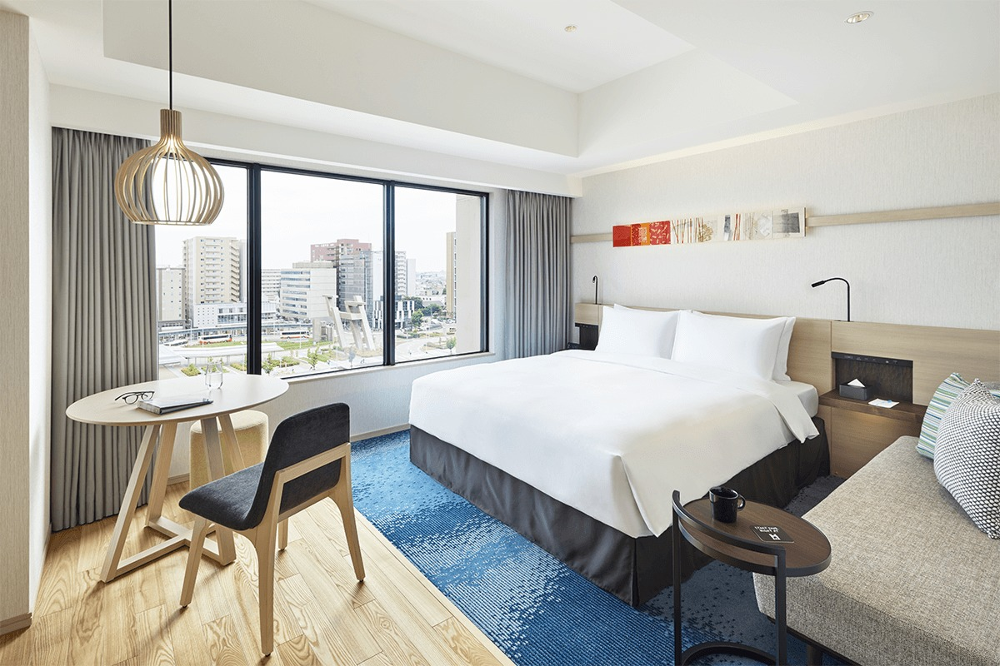
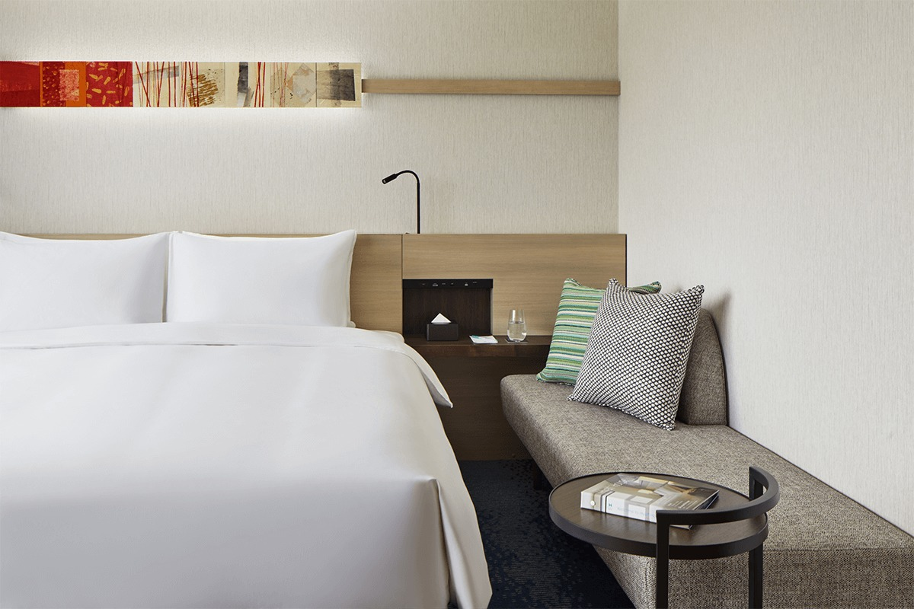
Еда и напитки
Завтрак, бар и лавка
В отеле есть ресторан для домашнего завтрака, бар, где можно передохнуть между прогулками и делами, и лавка, где можно на ходу взять перекус и напитки. Всё это легко подстроить под свой день.
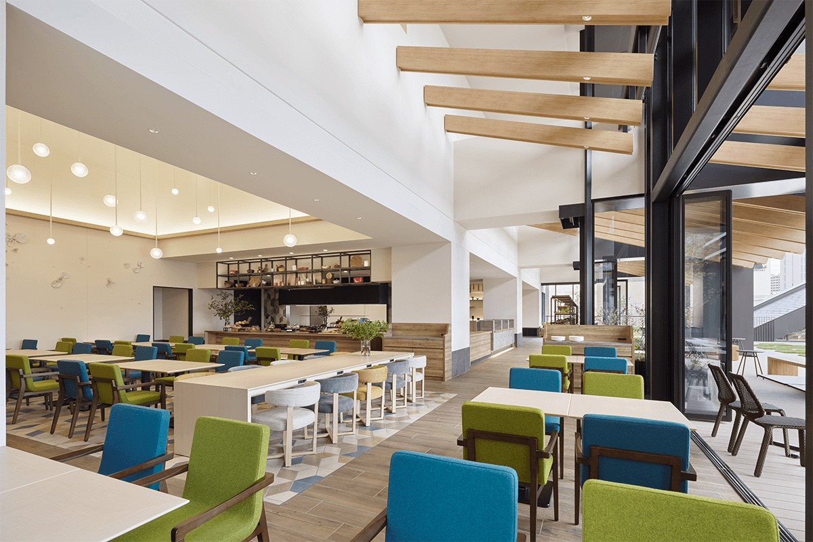
H Restaurant
Завтрак устроен как шведский стол: кофе, хлеб, салаты, а главное блюдо, которое здесь особенно любят, это омлет, его готовят при гостях после заказа. Одному гостю на номер завтрак бесплатен. По правилам 2021 года участники программы World of Hyatt (вступление и членство бесплатные) завтракают бесплатно вдвоём, если номер оплачен по применимому тарифу. Завтрак подают с 6:30 до 10:00.
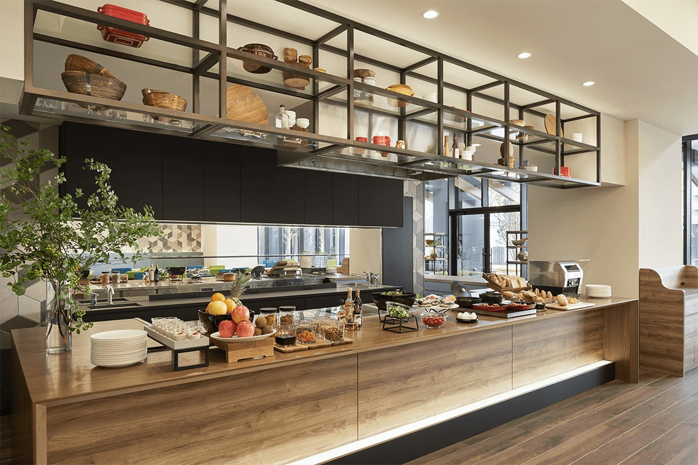
H Bar
В баре наливают авторские коктейли, отобранные вина и пиво, а ещё кофе и другие безалкогольные напитки. Сюда могут зайти и те, кто не живёт в отеле: назначить встречу или передохнуть после магазинов. Каждый день с 15:00 до 22:00 действует безлимит на 90 минут, напитки можно взять с собой на веранду или террасу. В 2021 году из-за пандемии бар работал с 10:00 до 19:00, а безлимит с 15:00 до 19:00.
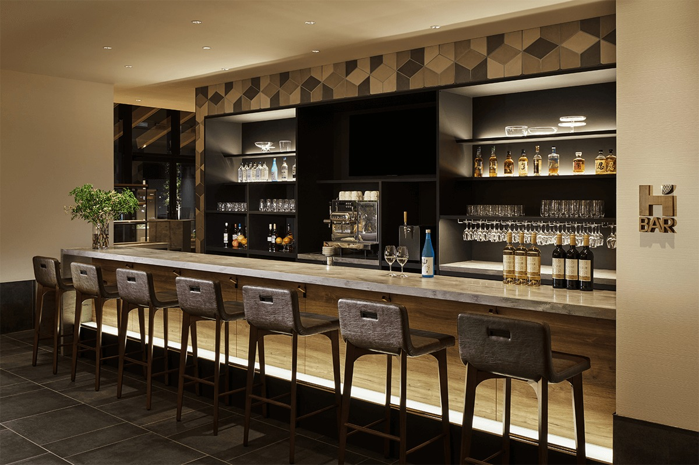
H Market
В лавке круглые сутки продают напитки, лёгкие закуски, местные продукты на вынос и предметы на каждый день. Зайти могут и гости со стороны, но с 24:00 до 6:00 лавка открыта только для тех, кто живёт в отеле.
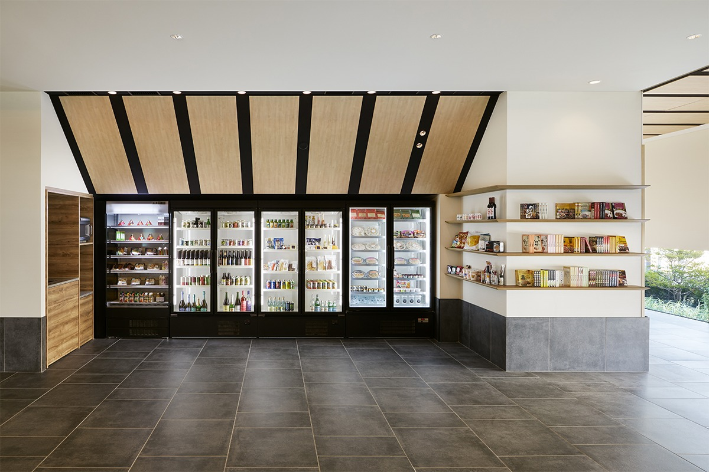
Hyatt House Kanazawa подходит тем, кто хочет в Канадзаве не просто переночевать, а пожить, особенно если поездка затягивается на неделю-другую и в ней находится место и для работы.
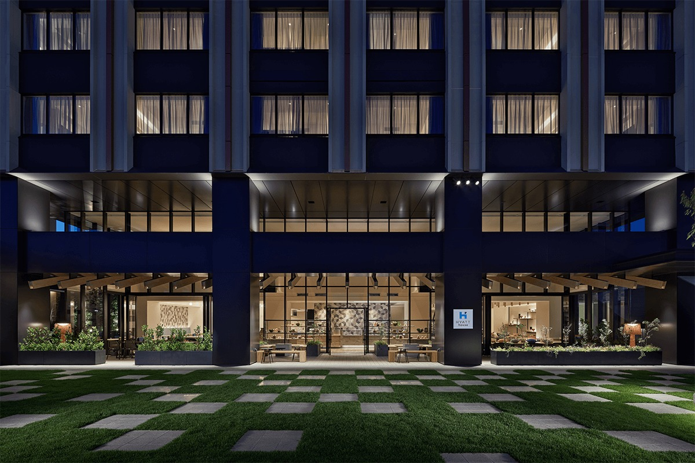
Hyatt House Kanazawa
- Адрес
- префектура Исикава, Канадзава, Хироока, 1-5-2
- Телефон
- +81 76-256-1235
- Номера
- 92 номера, от 15 125 иен за ночь с налогом и сервисным сбором, без налога на проживание